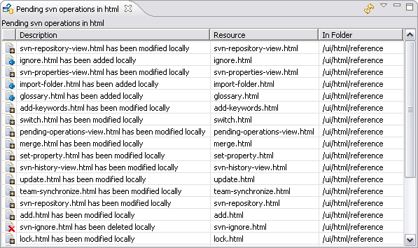

The Pending SVN Operations View provides a dedicated view of local changes outstanding since your last commit. To activate this view, choose and select Pending SVN Operations from the SVN section. You can also launch this view via the context menu.

This view allows you to review the local changes outstanding in your working copy since your last commit; no contact is made with the repository. As the view effectively represents a subset of your working copy resources, a full context menu is available allowing you to work directly with the individual files. Because of the way this view effectively flattens complex project directory structures, this view is often used to quickly review the scope of the changed resources in a project.

Related Tasks
None
Related Reference